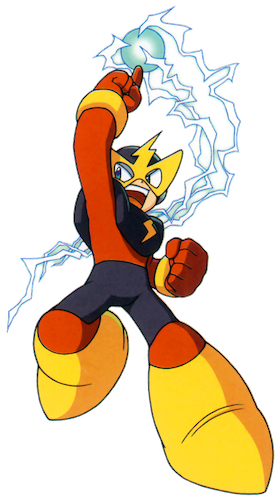

This is the main walkthrough section of the website. You can play through the levels in the order suggested in the table of contents below; there will be buttons at the bottom of each section to take you to the next and previous parts. Alternatively, you can click on one of the levels in the table if you need help with a specific level.
Table of Contents
D) Elec Man's Stage
Reaching The Boss
This stage is even more vertical than the last, being set in a towering electrical fortress in the sky. There are actually two weapons you'll need to obtain in this level: the one you get from beating the boss, Elec Man, and one that is hidden somewhere in the level itself. Although it may seem like picking up this item is optional and it only gives you an extra ability that lets you reach items on higher ledges, it is actually necessary to pick this up to finish the game, so don't miss it. Also, you'll need the Rolling Cutter a lot throughout this level, but make sure you save enough of it for at least 3 hits against the boss.
In this starting room, we will see a series of ledges alternating between left and right, with enemies on top of them. These guys are called Gabyoalls and they can cause a lot of trouble if you don't have the Rolling Cutter from the last stage. Thankfully, you do if you've been following the order of this guide, so proceeding will be much less hard. You see, these enemies are normally invincible; you can stun them momentarily with the Mega Buster, but this only lasts for a brief second and then they will start moving again. The Rolling Cutter will completely kill them, which is much more convenient, so equip it for now and use it to take these enemies out before making your way up the platforms (don't forget that you have a limited number of uses, so try to conserve its weapon power bar through the level or you'll be screwed when you reach more of these enemies.). If you can only stun them, it is possible to still make it up the ledges this way, but you'll have to time things perfectly so that they don't come back to life just im time to push you off of the ledge. The worst part is that they move much faster when you stand on the same ledge as them.
Climb the ladder to the next screen to meet two more of these enemies (they remind me of the spike trap enemies from the Legend of Zelda games). You'll really be in a tight spot here without the Cutter, but otherwise, piece of cake. There's a ladder in the bottom left but I really don't see the point to this, it just drops you straight into a Gabyoall back on screen 1. Whatever. Just head up the small platforms and climb the ladder, not worrying about the health pickup here as we can't get it just yet.
Some dangerous-looking electricity here but, before that, head down the bottom right ladder to reach that nice health pickup. If you've had any trouble so far, this is a godsend. You'll have to defeat the two spike trap lookalikes again as they've respawned, but no biggie. Now, back at the part with the big zappy things. Just watch them for a minute to learn their pattern, and then simply time your jumps right to avoid them (it's a narrow window but not too cruel) and get up to the ladder. Head up, to find another very, very long ladder that takes up the whole screen. As you start climbing it, a new green type of enemy called a Watcher will attack from left and right. They shoot bolts of electricity that shoot just above and below where Mega Man is, so try to stay level with these enemies (it's tougher when there are lots of them) and shoot at them (another group of one-hitters, thankfully). If you get hit, you'll lose both your health and your footing, and probably fall back to the previous screen...
Your reward for making it up past this screen is... another screen which is pretty much identical, except you'll fall further down this time if you're unlucky. Keep heading up. You'll finally reach the top of the ladder, where it is time for... an appearing/disappearing block puzzle! These are staples of the old Mega Man games. They're kind of fun but the sound effect of the blocks changing gets painful to listen to after a few seconds. Learn the pattern of the 4 blocks here; it's not random (thank god) and will repeat in the same way every cycle, so just pick whether you want to go left and right and use the blocks to reach your preferred ladder. You'll have to go right eventually, but I recommend going left first to earn 3 small weapon refills (I should mention that you need to have equipped the weapon that you want replenished, otherwise the refills will go to waste). You'll likely want to equip the Cutter here to refill some of its energy. It's entirely possible to get up to the ladder above from this ledge with a really precise jump but you'll probably fall down, so let's just use the reliable method...
If you went left, head back down and now take the right ladder, which is, incidentally, the right ladder. Use the magic blocks (that's what I'll be calling them from now on) to walk from right to left and jump to the ladder. Walk left and use this other ladder to go up a screen. This part of the level is challenging but fun and I really like the way it looks. You need to head right and use a series of blocks to jump right and up to a ladder (you'll be relieved to find that they're not magic blocks and they stay fixed in place). The big health pickup in the small alcove left of the first block looks very appealing... but getting out of there after you've taken it is a bit hit or miss. You have to jump out to the block with extremely good timing or, if you're too early, you'll just hit the ceiling and fall to your death. Go for it if you're confident, but it might be better to sacrifice the health in exchange for actually staying alive, ironically. Anyway, head up the blocks (these jumps aren't too hard) and head up that ladder to...
...More tower climbing. Except this time, you actually have a choice of whether you want to go right or left. If you chose left, see option A below, but if you chose right, see option B. If you head left, you'll need to use the Rolling Cutter again, but it's probably the safer path. Regardless of which you choose, there's something very important waiting after these crossroads.
- Watch out for more pain-inducing Watchers as you climb the ladder. On the next screen, there's a block you can lift here to swap to the other side (option B) but I strongly recommend you save the Super Arm's power for something in a moment. Forgetting the block, you'll encounter three Gabyoalls here, so take them out with the Cutter and head up once more. Another block to let you swap but there's really no point because whichever side you're on you'll have to face an onslaught of Watcher attacks. Go up one more screen and, whichever path you took, you'll see a blue cannon-looking thing behind three blocks.
- Watch out for more pain-inducing Watchers as you climb the ladder. On the next screen, there's a block you can lift here to swap to the other side (option A) but I strongly recommend you save the Super Arm's power for something in a moment. Forgetting the block, you need to make a couple of carefully coordinated movements to escape electrocution. For the first zapper, hang out at the very top of the ladder and move up and left to the next one the instant that the electricity disappears. It's so picky, but the second one is nicer because you have space to jump. Continue up a screen. Another block to let you swap but there's really no point because whichever side you're on you'll have to face an onslaught of Watcher attacks. Go up one more screen and, whichever path you took, you'll see a blue cannon-looking thing behind three blocks.
It is vital that you pick up the blue cannon behind the blocks; this is the 'optional' weapon that I mentioned at the start of this level. Use Guts Man's power once more to move the 3 blocks and you'll get a new power, which you can start using straight away from the weapons screen.
New Weapon: Magnet Beam
The only missable weapon in Mega Man 1. You will need it to finish the game. This thing creates platforms(!) that float in mid-air or against a wall, depending on where you fire them. This is very useful for reaching hard-to-get items in high places, or for getting over spike pits. The longer you hold the button, the wider the platforms you create will be. Press it quickly for a narrow one.
You can try out your shiny new Magnet Beam now if you'd like, just to see how it works. You can select it from the weapon screen; it's the 'M' option. It's pretty nifty. You won't need it at any point in this level going forward (unless you choose the rightmost path in a moment), so use it as much as you'd like and don't worry about wasting its power bar.
Now, back to ascending this tower. You have another choice of two paths, and the obstacles on each side are pretty similar to before. Option A is left, option B is right. You'll need some Guts Man power and at least one platform from the Magnet Beam if you're going right.
- Head up to the left ladder to reach some blade traps, easily defeatable with the faithful Cutter. A block to the right if you wish to change paths. Head up the ladder to see that there are now some electrical traps on this side too. Use good timing to climb past them, you know how it is by now. On the next screen, scramble past 2 more zappos and look for the red Kamadomas. One of them will tragically throw itself off a cliff as it tries to get to you. The paths reconvene here. Take the ladder at the top left to the next screen.
- Head up the right ladder to face a pair of zip-zappers. A block to the left if you wish to change paths. Otherwise, strategically navigate past the zappers and to the next screen for a small ladder to climb and then one more jolt of volts to time your way past, to get up a longer ladder to another screen. Here, you'll meet two very excited Kamadomas that really want to give you a hug, or something. One of them will be trapped outside at first. Take the first one out after luring it down to you by standing at the ladder's bottom and quickly moving out of the way and shooting left at it. Climb up and move the block, then shoot to take out the enemy as it jumps in (unless it already threw itself off the cliff to the left). Now, to make your way up past where the block was, you'll actually need to make a single platform in the wall with the Magnet Beam, so do that. The paths reconvene here, so head up the top left ladder now.
We're nearing the end of this long ascent now. This next area after climbing the ladder looks just like the one we went through earlier, but there is no risky health pickup here now. Just do what you did before and platform up to the ladder. The next screen should be no problem, it's just like the one where we first saw these zappy-zaps and you've got a lot of experience of timing your way past them by now. Jump up to the ladder and use it to get to what is possibly the most badly-placed Big Eye ever. You're going to have to get lucky and hope it jumps high over you so you can get under it to the sliding door because there is no way you'll be able to defeat this thing before it jumps over to you, not even with the Cutter. Either have good fortune or brace yourself through a nasty hit, then head through the door to...
...Not the boss just yet! But you're very close. You just need to make one more great climb through some zappers placed at different parts of this very long ladder. The green background here looks pleasing to the eye. The zappers will alternate between middle and then top and bottom simultaneously. After getting through a total of 6 of them, equip the Cutter, and it's now boss time, for real.
Boss Fight: Elec Man
Elec Man isn't the most difficult boss, but his waves of electricity will take out a whole THIRD of your health bar, making things nerve-wracking even if you're fighting him with full health. Even just him running at you will cause you to lose quite a chunk of energy. His waves are hard to dodge when he's in front of you, so as soon as the battle starts, jump onto the blocks to the left and spam the Cutter at him. This makes things more equal, as the the Cutter takes out a third of his health! Standing on the blocks gives you a bit of a brief high ground advantage until he jumps up to you, so use this to dodge his first wave (which he'll fire pretty much instantly as the fight starts) and aim that Cutter well, remembering that it moves in a thin teardrop-pattern in front of you. The good thing is that each hit from the Cutter also pushes him back a little bit which is handy in keeping him away from you.
You might be tempted to try throwing the two blocks at him, like you can in the fight with Cut Man. But... just don't. It hurts him a lot less than it did Cut Man and standing on the ground next to the blocks puts you right in his line of fire. You'll probably just die before you even get a chance to throw both blocks at him.
The Mega Buster isn't the best choice as it barely damages him, compared to the Cutter. Needless to say, don't try killing him with the Magnet Beam either...
When all is said and done, collect that sphere and you'll earn another weapon, the Thunder Beam.
New Weapon: Thunder Beam
In my opinion, this may be the best weapon in the game. When you use it, you can shoot three beams of electricity at once; one up, one down, and one straight in front of you. It's also quite powerful and can travel through enemies, hitting them multiple times.
With half of the robot masters taken down, our next target is Ice Man...